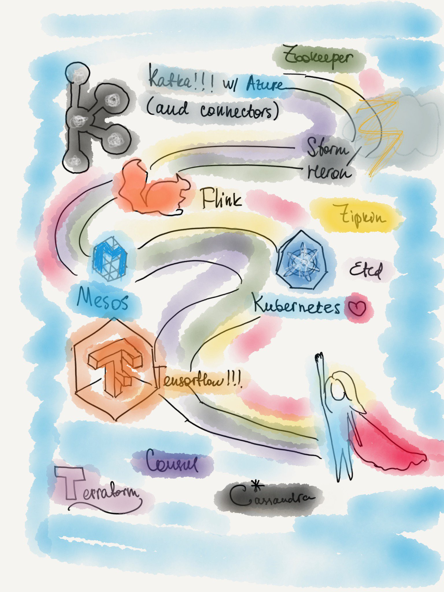

The year of 2017 has started with continuation of me working at Microsoft Research on a super fascinating project "Springfield", which is now called "Microsoft Security Risk Detection". As you might have guessed, I have been a functional programming enthusiast for quite a long time and was absorbed by functional programmer-ing in F# at Microsoft Research as a Senior Wizard Engineer, building an intelligent cloud service for optimized infrastructure provisioning, and dedicated significant amount of effort to enhancing machine storage strategy.
I have had a privilege of meeting and talking to Leslie Lamport during his workshop in February at AI+R (former MSR) on verification of distributed algorithms, where I have learned TLA+ and met a lot of smart people building algorithms for distributed systems.
After exploring the topic of TLA+, I have given a talk on distributed snapshot at Seattle Scalability. It is my favorite meetup in Seattle, the audience is very technical, always curious about the intrinsic details and asking deep valid questions. Here is a link of the event, and slides
Prior to 2017 I have not done podcasts, so in 2017 I have recorded 3 of them! At Developer On Fire I talked to Dave Rael about my experience, technical passion, my views on success and other interesting things. You can listen to it here. I’ve also recorded for MSDevShow on the topic of functional programming, and Hanselminutes (which is yet to be released).

I worked on a talk with my co-speaker Natallia Dzenisenka (@nata_dzen on twitter) for a few months, and in May spoke at OSCON Austin on the topic of "Intuitive Distributed Algorithms", the talk was huge success. It was also fun to build prototypes of distributed snapshot and gossip like algorithms. This one is one of my favorite talks I’ve given. Here is where you can find the slides and the video of the presentation on distributed algorithms with Natallia at OSCON.
Another thing I have done was co-organizing .NET Fringe by helping with speakers selection and CFP. I’m proud to say we had an amazing lineup of speakers and I’m looking forward to helping with 2018 edition. .NET Fringe is still one of the best conferences in the world because of its spirit and atmosphere <3 Let me know if you would like me to share tips on how to organize a successful community conference.
My first keynote also was in 2017 in San Francisco at the awesome Open FSharp conference. It was a different kind of talk, less technical than my usual talks, more inspirational. It went great and I loved the experience and connection with the Community in such a way!
The best change of 2017 is the transition to my new team as a Senior Cloud Developer Advocate, fully focusing on distributed systems and big data, which is my true passion. I still love and support functional programming and regularly use it in my distributed experiments. The new team I've joined is Cloud Developer Advocacy team full of most wonderful and smart people I've ever worked with. The uniqueness is that I get to combine being deeply technical and am involved in engineering, as well as community and have practical influence on strategy of product development. Here I can use my deep technical expertise to improve Azure from the inside and advocate for the community. Three aspects of this job make it very impactful. Just imagine when your passion is your full time job.
I have also started a YouTube channel! One of the first videos I’ve made was a rooftop discussion about containers with Adron. Later I have recorded some demos at KubeCon, including the one about Cassandra and StatefulSets, which I’ve also written about.
It has been a great year, and I'm really thankful to have met all the people that I've met this year. If I’ve meet you in 2017, (yes you), I truly appreciate it and you’re wonderful!
I'm really looking forward to next year and am getting super excited just thinking about kinds of adventures and challenges, technologies and learnings that are ahead. Among other things, there will be a lot of Spark Streaming, Kafka, Cassandra, Kubernetes and Azure for me! If you are working with these technologies and want to talk about anything - send me a direct message on twitter. If you are in Seattle and work with cloud, distributed systems and big data - I’m always happy to meet and talk.
Happy 2018!